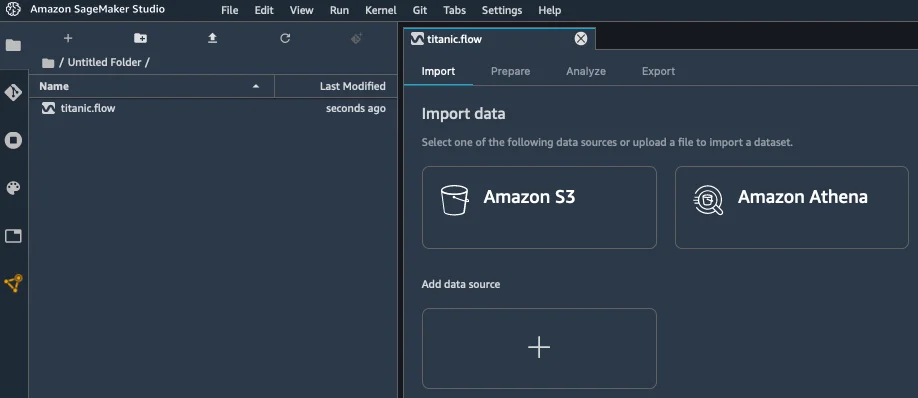

Published: 2020-12-08 | Originally published at AWS Blog
Today, I’m extremely happy to announce Amazon SageMaker Data Wrangler , a new capability of Amazon SageMaker that makes it faster for data scientists and engineers to prepare data for machine learning (ML) applications by using a visual interface.
Whenever I ask a group of data scientists and ML engineers how much time they actually spend studying ML problems, I often hear a collective sigh, followed by something along the lines of, “ 20%, if we’re lucky. ” When I ask them why, the answer is invariably the same, “ data preparation consistently takes up to 80% of our time! ”
Indeed, preparing data for training is a crucial step of the ML process, and no one would think about botching it up. Typical tasks include:
In the early stage of a new ML project, this is a highly manual process, where intuition and experience play a large part. Using a mix of bespoke tools and open source tools such as pandas or PySpark , data scientists often experiment with different combinations of data transformations, and use them to process datasets before training models. Then, they analyze prediction results and iterate. As important as this is, looping through this process again and again can be time-consuming, tedious, and error-prone.
At some point, you will hit the right level of accuracy (or whatever other metric you’ve picked), and you’ll then want to train on the full dataset in your production environment. However, you’ll first have to reproduce and automate the exact data preparation steps that you experimented within your sandbox. Unfortunately, there’s always room for error given the interactive nature of this work, even if you carefully document it.
Last but not least, you’ll have to manage and scale your data processing infrastructure before you get to the finish line. Now that I think of it, 80% of your time may not be enough to do all of this!
Introducing Amazon SageMaker Data Wrangler
Amazon SageMaker Data Wrangler
is integrated in
Amazon SageMaker Studio
, our fully managed integrated development environment (IDE) for ML. With just a few clicks, you can connect to data sources, explore and visualize data, apply built-in transformations as well as your own, export the resulting code to an auto-generated script, and run it on managed infrastructure. Let’s look at each step in more detail.
Obviously, data preparation starts with locating and accessing data. Out of the box, SageMaker Data Wrangler lets you easily and quickly connect to Amazon Simple Storage Service (Amazon S3) , Amazon Athena , Amazon Redshift and AWS Lake Formation . You can also import data from Amazon SageMaker Feature Store . As all things AWS, access management is governed by AWS Identity and Access Management (IAM) , based on the permissions attached to your SageMaker Studio instance.
Once you’ve connected to your data sources, you’ll probably want to visualize your data. Using the SageMaker Data Wrangler user interface, you can view table summaries, histograms, and scatter plots in seconds. You can also build your own custom graphs by simply copying and running code written with the popular Altair open source library.
Once you’ve got a good grasp on what your data looks like, it’s time to start preparing it. SageMaker Data Wrangler includes 300+ built-in transformations, such as finding and replacing data, splitting/renaming/dropping columns, scaling numerical values, encoding categorical values, and so on. All you have to do is select the transformation in a drop-down list, and fill in the parameters it may require. You can then preview the change, and decide whether you’d like to add it or not to the list of preparation steps for this dataset. If you’d like, you can also add your own code to implement custom transformations, using either pandas , PySpark , or PySpark SQL .
As you add transformation steps to your processing pipeline, you can view its graphical summary in SageMaker Studio . You can also add new stages to the pipeline, for example a new data source, or another group of transformation steps (say, a data cleaning group, followed by a feature engineering group). Thanks to the intuitive user interface, your data preparation pipeline will take shape in front of your eyes, and you’ll instantly be able to check that processed data looks the way that it should.
Early on, you’d certainly love to check your data preparation steps, and also get a sense of their predictive power, wouldn’t you? Good news, then! For regression and classification problem types, the “Quick model” capability lets you select a subset of your data, train a model, and determine which features are contributing most to the predicted outcome. Looking at the model, you can easily diagnose and fix data preparation issues as early as possible, and to determine if additional feature engineering is needed to improve your model performance.
Once you’re happy with your pipeline, you can export it in one click to a Python script that faithfully reproduces your manual steps. You won’t waste any time chasing discrepancies, and you can directly add this code to your ML project.
In addition, you can also export your processing code to:
Now, let’s do a quick demo, and show you how easy it is to work with SageMaker Data Wrangler .
Using Amazon SageMaker Data Wrangler
Opening
SageMaker Studio
, I create a new data flow in order to process the
Titanic
dataset, which contains information on passengers, and labels showing whether they survived the wreck or not.
My dataset is stored as a CSV file in Amazon Simple Storage Service (Amazon S3) , and I select the appropriate data source.

Using the built-in tool, I quickly navigate my S3 buckets, and I locate the CSV file containing my data. For larger datasets, SageMaker Data Wrangler also supports the Parquet format.
As I select my file, SageMaker Data Wrangler shows me the first few rows.
I import the dataset, and I’m presented with an initial view of the data flow. Right-clicking on the dataset, I select “Edit data types” to make sure that SageMaker Data Wrangler has correctly detected the type of each column in the dataset.
Checking each column, it looks like all types are correct.
Moving back to the data flow view, I select “Add analysis” this time. This opens a new view where I can visualize data using histograms, scatterplots, and more. For example, I build an histogram showing me the age distribution of passengers according to their survival status, and coloring the bins using their gender. Of course, I can save it for future use.
Moving back to the data flow view once again, I select “Add transform” in order to start processing the dataset. This opens a new view, showing me the first lines of the dataset, as well as a list of 300+ built-in transforms.
Pclass
, the passenger class, is a categorical variable, and I decide to encode it using one-hot encoding. This creates 3 new columns representing different dimensions, and I can preview them. As this is exactly what I wanted, I apply this transform for good. Likewise, I apply the same transform to the
Sex
column.
Then, I drop the original
Pclass
column. Using the same transform, I also drop the
Name
column.
In order to get a quick idea on whether these transformations increase or decrease the accuracy of the model, I can create a analysis that trains a model on the spot. As my problem is a binary classification problem, SageMaker Data Wrangler uses a metric called the F1 score. 0.749 is a good start, and additional processing would certainly improve it. I can also see which features contribute most to the predicted outcome: sex, age, and being a third class passenger.
Then, moving to the “Export” view, I select all the transforms I’ve created so far, in order to add them to my ML project.
Here, I select “Python Code” to generate a Python script. Other options are available for Amazon SageMaker Processing , Amazon SageMaker Pipelines , and Amazon SageMaker Feature Store .
A few seconds later, the script is available. I could add it as is to my ML project, and rest assured that my data preparation steps would be consistent with the interactive transforms that I’ve created above.
Getting Started
As you can see,
Amazon SageMaker Data Wrangler
makes it really easy to work interactively on data preparation steps, before transforming them into code that can be used immediately for experimentation and production.
You can start using this capability today in all regions where SageMaker Studio is available.
Give it a try , and let us know what you think. We’re always looking forward to your feedback, either through your usual AWS support contacts, or on the AWS Forum for SageMaker.
- JulienSpecial thanks to my colleague Peter Liu for his precious help during early testing.
Julien is the Artificial Intelligence & Machine Learning Evangelist for EMEA . He focuses on helping developers and enterprises bring their ideas to life. In his spare time, he reads the works of JRR Tolkien again and again.
{kind=link}
{kind=link}
{kind=link}
{kind=link}
{kind=link}
{kind=link}
{kind=link}
{kind=link}
{kind=link}
{kind=link}
{kind=link}
{kind=link}